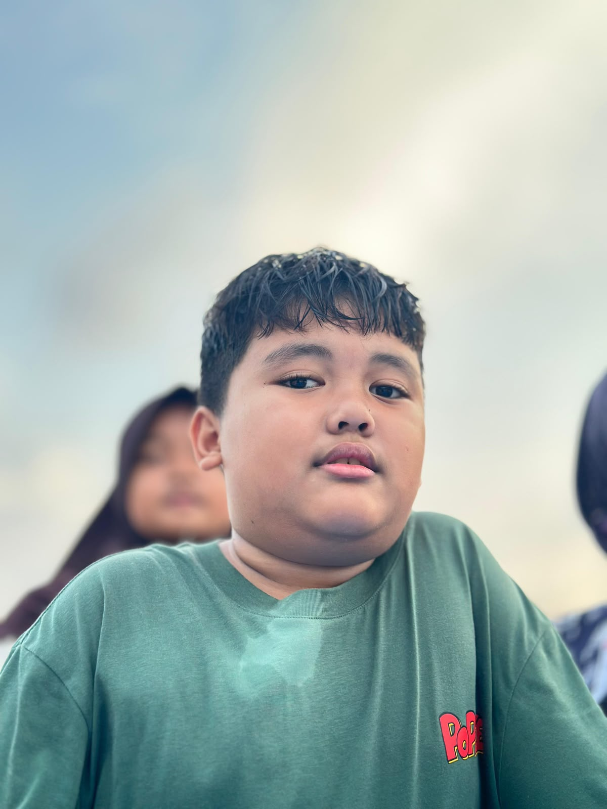

AYAH
ちち
Chichi
Ayah (keluarga sendiri)
IBU
はは
Haha
Ibu (keluarga sendiri)

KAKAK
あに
Ani
Kakak Laki Laki (keluarga sendiri)

SAYA
わたし
Watashi
Saya (kata ganti orang pertama)

ADIK
おとうと
Otouto
Adik Laki Laki (keluarga sendiri)